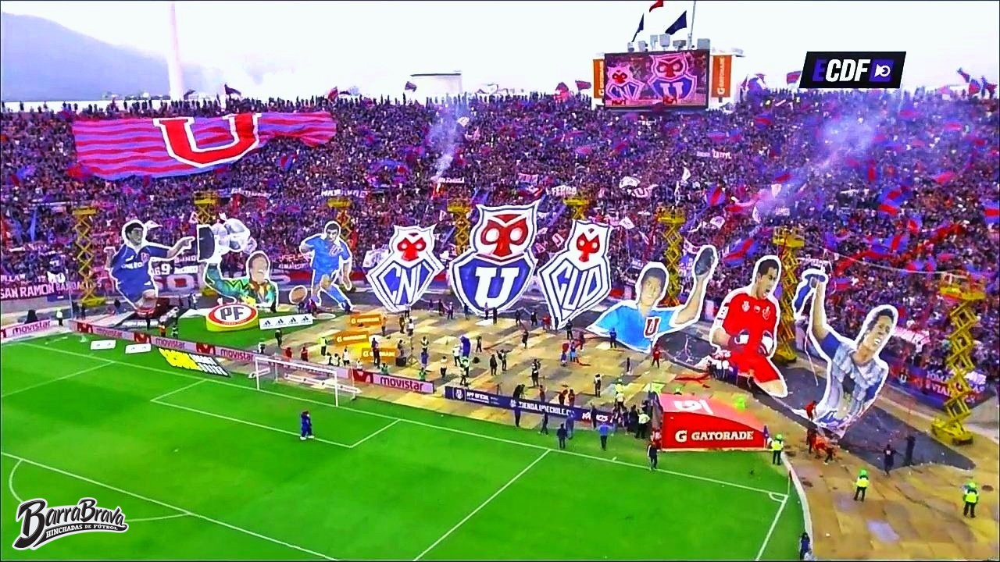
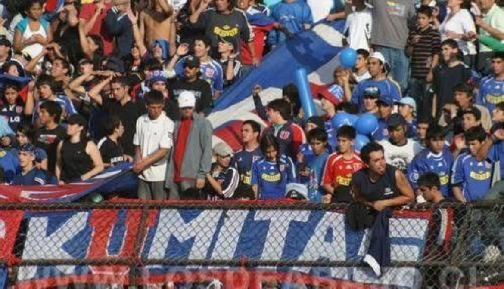
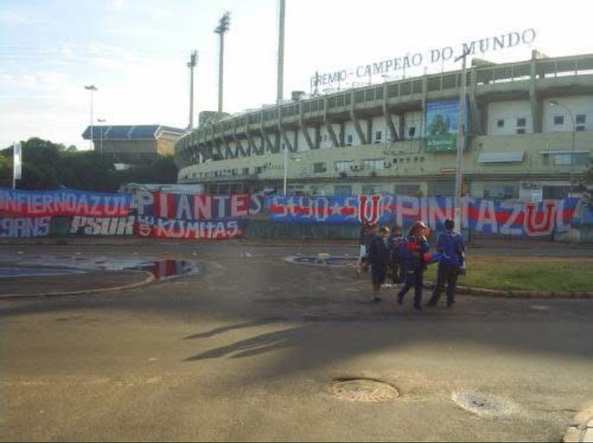
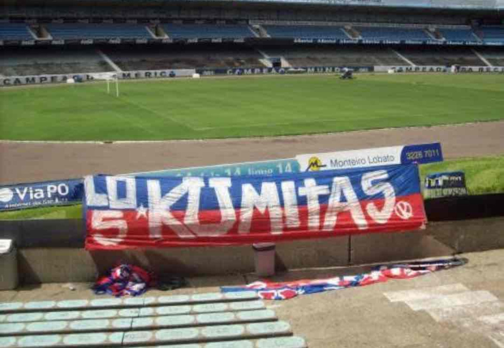

BIENVENIDO A LA PAGINA DE LA N1 DEL PAÍS🇨🇱

LOS DE ABAJO.
Somos la hinchada más apasionada y leal del Club Universidad de Chile, un colectivo que vibra con cada gol, con cada victoria, pero también en la derrota. En nuestra barra no solo se vive el fútbol, se respira identidad, historia y cultura azul. Con más de 30 años de lucha, somos un símbolo de unidad, orgullo y respeto hacia los colores que llevamos en el corazón. Aquí, cada miembro es parte de una familia que no solo alienta, sino que también defiende los valores que representan a nuestra institución. Esta página es un espacio donde podrás conocer más sobre nuestra historia, nuestras acciones y cómo puedes unirte a nosotros en cada momento de pasión que vivimos en las gradas.
Dentro de la Barra Los de Abajo del Club Universidad de Chile, existen diversas facciones que enriquecen nuestra identidad, cada una con su propia historia, valores y formas de alentar. Aunque todas comparten el amor inquebrantable por los colores azules, cada facción tiene su estilo único de expresión, tanto dentro como fuera del estadio. Estas agrupaciones son reflejo de la diversidad y la pasión que nos une: unos se destacan por su fervor en la hinchada, otros por su trabajo social o su compromiso con la cultura popular. Si bien las diferencias existen, el respeto mutuo y el objetivo común de apoyar a la "U" en cada partido, cada campeonato, y en cada momento crucial, son los pilares que mantienen viva la unión entre estas facciones. A través de esta página, te invitamos a conocer más sobre las distintas facciones que componen nuestra gran familia y cómo cada una aporta a la fuerza que tiene "Los de Abajo" en cada rincón del país.
UNAS DE LAS FACCIONES MAS VIAJERAS DEL CLUB:
Los Kumitas: Orgullo de Lo Espejo y la Población José María Caro
"Los Kumitas" nacen en las calles de la comuna de Lo Espejo, específicamente desde el corazón de la Población José María Caro, un lugar que ha sido cuna de pasión, esfuerzo y compromiso. Esta facción, que forma parte de la gran familia de la Barra Los de Abajo, se distingue por su fuerza en la tribuna y su inquebrantable amor por la "U". Los Kumitas no solo son conocidos por su aliento imparable, sino también por su estrecho lazo con la comunidad, siempre dispuestos a luchar por sus raíces y por los colores que representan. En cada encuentro, su presencia en las gradas es una demostración de unidad y de cómo el fútbol puede ser un motor de identidad, pertenencia y esperanza. Para ellos, ser parte de Los Kumitas no es solo un acto de hinchaje, sino una forma de vida, un grito de lucha y resistencia que resuena con fuerza desde los barrios populares de Santiago hacia cada rincón del país.

.jpeg)


🇧🇷 🇨🇱 🇻🇪 🇦🇷 🇨🇴 🇧🇴 ✈️🗺️
VISITA AQUÍ PARA VER MAS IMAGENES DE "LOS KUMITAS"
MÁS FOTOS